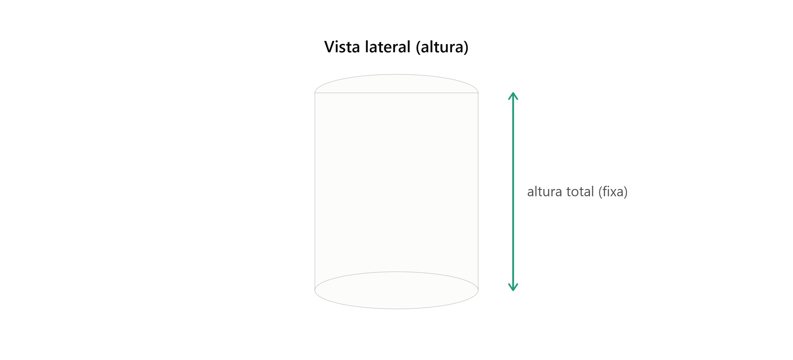
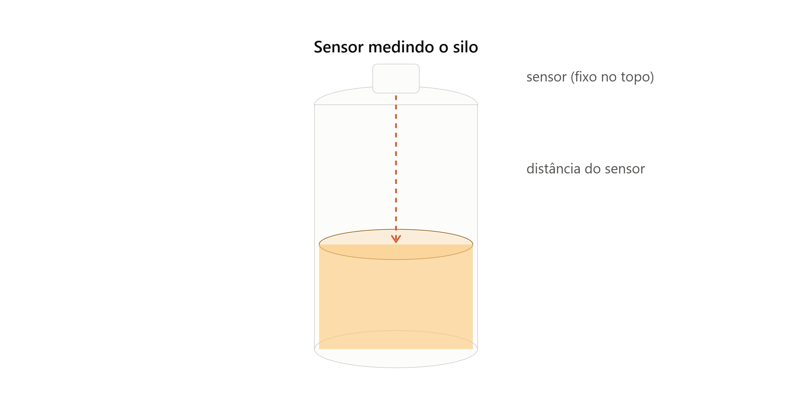
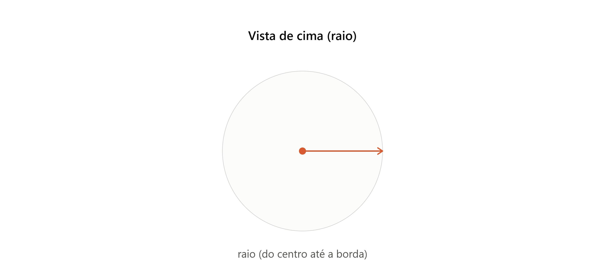

1️⃣ Calculadora de Capacidade de Armazenamento - SilosTech 👩🏽💻🌽
Estime o volume de grãos armazenado a partir da altura medida pelo sensor
Calculadora Área Silo
Altura total do silo:

Altura medida pelo sensor:

Raio Cilindro do Silo:

Calcular volume
Calculo Otimização de Espaço
Capacidade recuperada
Calculo Prejuizo M³
Preço do m³:
Porcentagem de perda:
Calcular prejuizo
2️⃣ Calculadora Financeira - SilosTech 💰
Compare o custo da verificação manual com a economia do monitoramento remoto
Economia por escala utilizando monitoramento remoto
Número de silos monitorados.
Custo de deslocamento por visita a um silo, em reais (R$).
Visitas evitadas por silo por mês.
calcular
Custo do nosso projeto
Quantidade de silos.
Altura do silo, em metros.
Calcular projeto
Simulação de Economia Anual
Capacidade Armazenada (toneladas)
Taxa de Perda Média Comum (% ao ano)
Taxa de Perda com Tecnologia SiloTech (% ao ano)
Preço médio por tonelada (R$)
Investimento estimado na Tecnologia SiloTech (R$)
Calcular economia